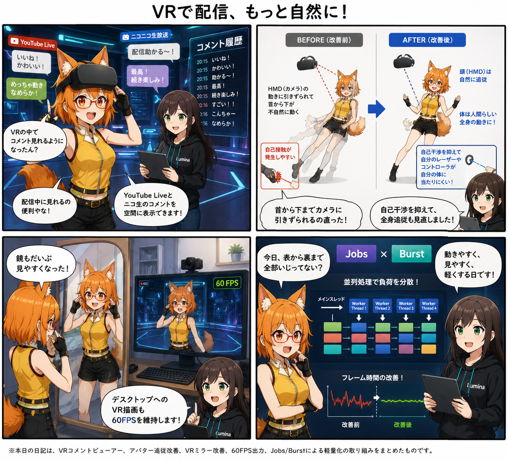

VRで配信、もっと自然に！
今日は、VRの中で配信コメントを確認するところから、アバターとして自分が動く感覚、鏡やデスクトップへの見え方、さらにその裏側の処理負荷まで、VRモード全体をまとめて磨いた一日でした。

配信コメントを、VRの外へ見に行かなくていい
コミット 6ad78de では、VRライブコメントビューアーが追加されました。YouTube Liveやニコニコ生放送のコメントをVR空間へ表示するためのProvider、吹き出し表示、履歴ボード、画像表示、安全なリモート画像取得、カメラへの表示制御まで、配信中に使うための一連の仕組みがまとめて追加されています。
VR配信では、コメントを見るためにHMDの外へ意識を戻すだけでもテンポが崩れます。コメントがVR空間の中にあれば、アバターを動かしながら視聴者の反応を確認できます。履歴ボードも用意したことで、流れてしまったコメントをあとから見返す導線も持てるようになりました。
ろひ「VRの中でコメント見れるようになったん？」
ルミナ「配信中の視線移動を減らせます」
「アバターになる」を、もっと身体らしく
コミット fb30af4 では、アバター化時の全身追従とリップシンクを改善。その後の bef3450 では、全身追従と自己干渉をさらに見直しました。
HMDは頭の位置を正確に追えますが、その値だけで首から下まで引っ張ると、人間の身体というより「頭に胴体がぶら下がっている」ような動きになりがちです。Final IKを使う経路や入力ドライバ、コントローラー側のColliderを調整し、頭はHMDへ追従しながら、胴体や手足はより自然な全身の動きとして成立する方向へ寄せています。
同時に、自分のVRコントローラー由来の接触判定が自分自身のアバターへ不要に干渉するケースも抑制しました。見た目だけでなく、「自分の身体として操作したときに邪魔をしない」ことも重要な改善点です。
鏡とデスクトップ出力も、配信目線で見直す
コミット 48f6c1b ではVRミラーとデスクトップ出力を大きく改善し、投影計算やミラー設定、VRカメラ出力まわりを整理しました。さらに 044bd7e ではVRミラーのカリング判定を修正しています。
VR内で自分のアバターを確認する鏡は、単なる装飾ではなく、表情・姿勢・衣装の見え方を確認する重要な道具です。ミラー側の投影や表示判定を見直すことで、確認用の道具として安定して使える方向へ近づけました。
そして a417b87 では、VRからデスクトップへ出すプレビュー描画を60FPSで動かすためのスケジューラを整備。HMD側だけでなく、配信や録画で視聴者が見るデスクトップ出力も滑らかに保つことを狙っています。
表側を増やしたぶん、裏側はJobs/Burstで軽くする
新機能を増やす一方で、コミット 403e945 ではUnityのJobs / Burstを使ったアバター処理の並列化も進みました。Mesh前処理、BlendShape、PhysBone、DynamicBoneなどに並列処理用の実装やテストが入り、1本のメインスレッドへ処理が集中しにくい構成へ寄せています。
VRではフレーム時間の揺れが体感へ直結します。そのため「機能を増やしたから重くなりました」ではなく、見える機能を増やすのと同時に、裏側の処理方法そのものも作り直す必要があります。今回はまさに表と裏を同時に触った日でした。
同じ集計期間に進んだこと
今回の集計期間には13コミットが入り、合計で115ファイル変更、26,924行追加、1,327行削除となりました。
- 345b3b9 — VAB4.5 Constraint復元とPhysBone初期化順を修正
- 8aa04ea — ライト状態復元とUI表示を改善
- 0ead3d8 — 布パーツの掴み位置ずれを修正
- ca9b2d1 — LipSync実動作診断ツールを追加
- 8240048 — アバター化時の身長補正を視点オフセット方式へ変更
- 2e1d853 — PhysBone遅延初期化テストをEditor側へ整理
集計終了時点の最終HEADは 2e1d853f62b1047519376db1de40a703d1700e28（「PhysBone遅延初期化テストをEditor側へ整理」）です。
4コマの裏話
今回は、配信中に最初に目に入る「コメント」、自分自身の感覚に直結する「全身追従」、確認と配信に使う「ミラーと60FPS出力」、最後に全部を支える「Jobs / Burst」という順番で、一日の作業を表から裏へたどる構成にしました。
4コマ自体の生成ルールもこの日から整理し、ろひの正式参照画像やページ構成、吹き出しルールなどの固定部分と、その日だけの開発内容を分離して扱う方式へ改めています。
今日のまとめ
- YouTube Live / ニコニコ生放送向けのVRライブコメントビューアーを追加
- コメント吹き出し、履歴ボード、画像表示、安全な取得処理を整備
- アバター化の全身追従、リップシンク、自己干渉を改善
- VRミラーの投影・表示判定を改善
- VRデスクトップ出力を60FPS化
- Jobs / BurstでMesh・BlendShape・揺れ物処理の並列化を進行
本日のひとこと
配信しやすくするために、コメントからCPUの中まで触る。
視聴者のコメントを見るところ、自分が自然に動くところ、視聴者へ滑らかな映像を返すところ。その全部がつながって、VR Avatar Viewerが少しずつ「配信で使う道具」らしくなってきました。